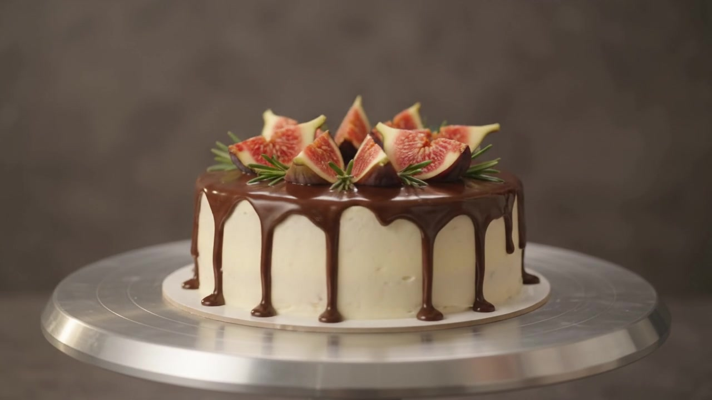
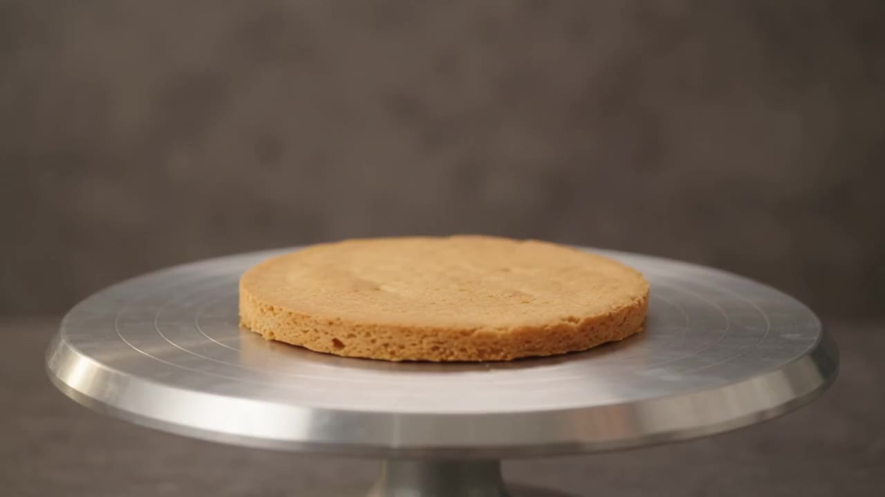
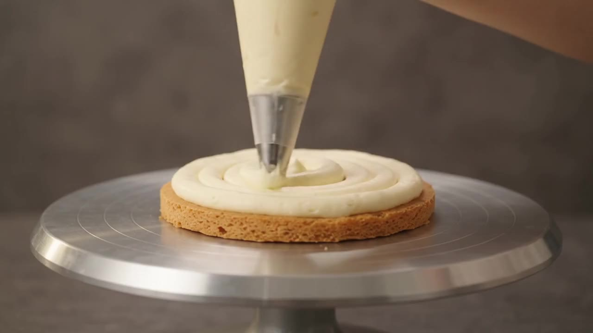
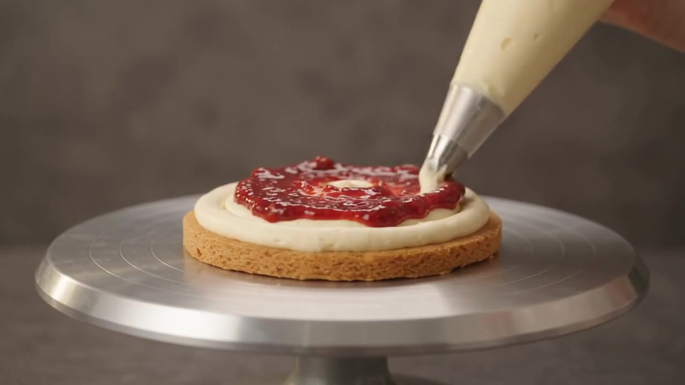
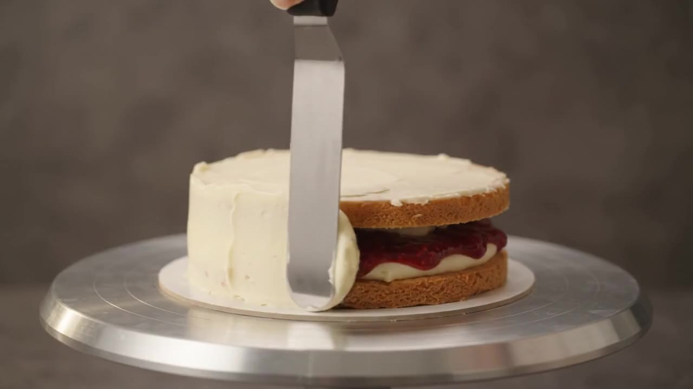
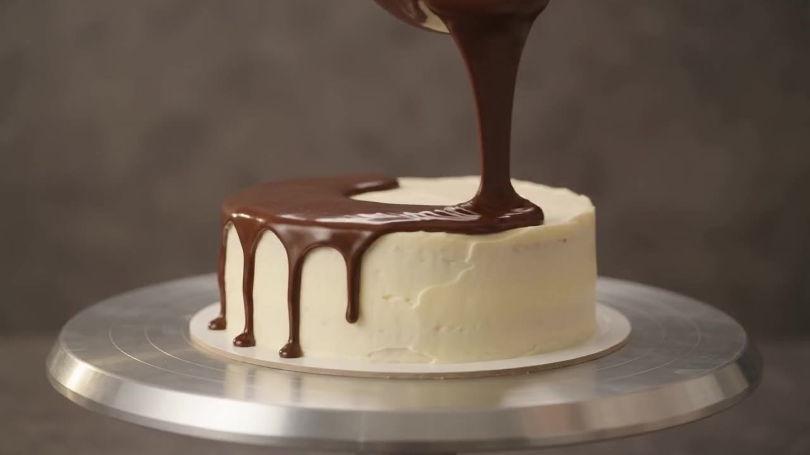
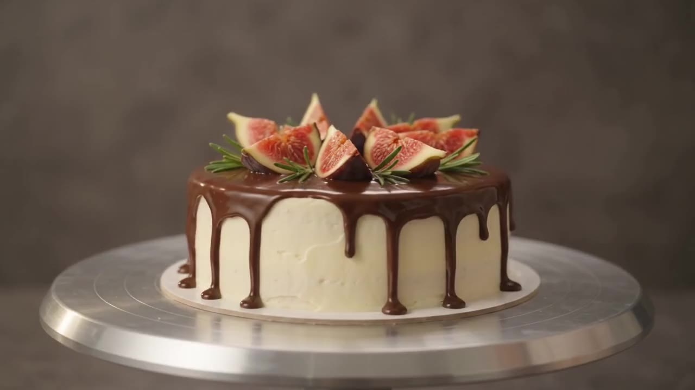

ЯРУС
Шесть страниц.
Один торт.
Каждый этап — отдельный экран с своим смыслом. Скролл листает их, как главы, и крутит ролик сборки.
Открыть страницу 0101 / 06
Пустая сцена
Стол
Пустой поворотный диск. Чистая сцена кондитера — нулевая высота, студийный свет, момент до первой детали.
- Металл
- Студийный свет
- Нулевая высота
Страница 01 · Стол
После сборки
Шесть экранов — одна логика кухни
Не «просто видео», а сценарий: каждый ярус отвечает за доверие, аппетит или финиш.
-

01 Стол Пустая сценаМасштаб и свет до первой детали.
-

02 Коржи Несущие слоиКонструкция и текстура бисквита.
-

03 Начинка Крем + джемВкус между слоями, не снаружи.
-

04 Крем Обтяжка боковСилуэт и белый холст под глазурь.
-

05 Глазурь Шоколадные подтёкиМомент «вау» в кадре.
-

06 Готово Инжир и розмаринТочка, где хочется заказать.
Формат
Ваш процесс — такими же страницами смысла
Снимаете с одной камеры, режете на этапы, вешаете на скролл. Клиент листает продукт как книгу.
Обсудить проектУчебное демо для портфолио.